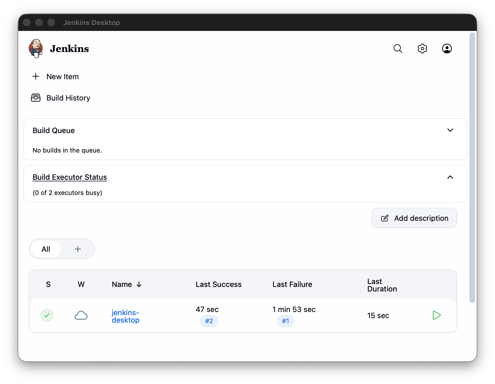

Jenkins Desktop
A desktop wrapper for Jenkins. The app launches the system jenkins command, owns the process, and displays the Jenkins web UI in a native window — no browser tab required.

How it behaves
- If Jenkins isn't running, the app starts it, shows a splash screen while it boots, then hands the window over to Jenkins at
http://localhost:8080. - If Jenkins is already running, the app attaches to it instead of starting a second copy.
- When you close the app, it stops the Jenkins process it started. A Jenkins you started yourself is left alone.
For long builds, the recommended setup is to run Jenkins independently (e.g. brew services start jenkins) and let the app attach to it — that way closing the window can never interrupt a build. See Getting Started.
Contents
- Getting Started
- Installation — install, first launch, daily use
- Building from Source — dev mode and packaging the
.app - How It Works — backend lifecycle and frontend handoff
- Configuration
- Options & Ports — environment variables and ports
- Troubleshooting — common problems and fixes
- Project
- Contributing — conventions, roadmap, current needs
Compatibility: built and tested on macOS with the Homebrew Jenkins installation. The Go code also compiles for Windows, but there is usually no
jenkinscommand onPATHthere — see Configuration.